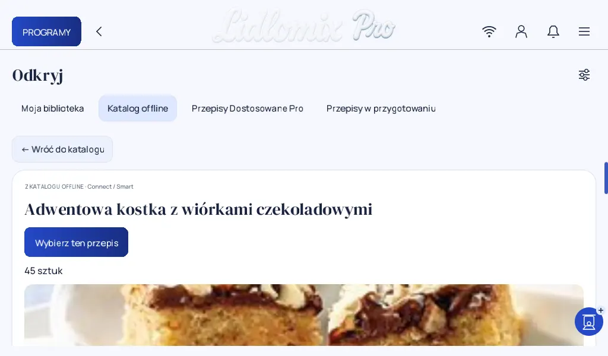
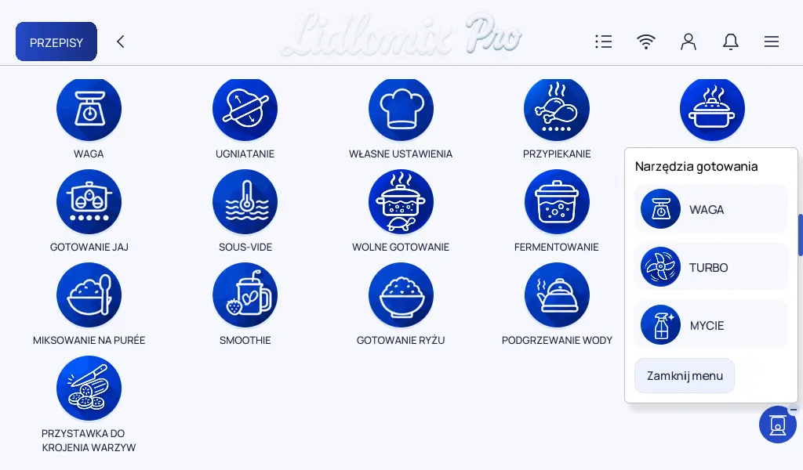

03 / Próby na sprzęcie ·
Waga, pokrętło i przepis
Otwórz przepis, zobacz krok ważenia i sprawdź, jak przepis z telefonu trafia na Connecta.
Otwarty przepis

Z karty mogę przejść do prowadzenia przez przepis. W tym przykładzie drugi krok to ważenie migdałów.
Ważenie w trakcie przepisu

Na ekranie mam obok siebie cel i pole na odczyt wagi. Przy osobnej próbie na Connect obie aplikacje pokazały 475 g. Po naciśnięciu TARA w Pro wskazanie spadło do zera.
Pływający przycisk

Pod ręką mam trzy skróty: Waga, Turbo i Mycie.
Z ChatGPT na Connect
Mogę zalogować się do ChatGPT bezpośrednio na robocie. Przeglądarka na starszym Connect bywa jednak powolna, więc przygotowałem też prostszą drogę przez telefon.
- Skanuję kod QR na robocie, żeby pobrać aplikację na telefon.
- W asystencie Lidlomix przygotowuję przepis jako plik JSON. Ten format zapisuje osobno kroki i nastawy, które robot potrafi odczytać.
- Wysyłam plik z telefonu przez lokalne Wi-Fi. Po wybraniu „Dostosuj przepis” mogę przejrzeć kolejne etapy, na przykład ugniatanie z dobranym czasem.
Lidlomix Pro nie wymaga subskrypcji. Nadal sprawdzam przesyłanie przepisów w codziennym użyciu.
Komentarze
Komentarze są dostępne na GitHubie.
Otwórz wątek i skomentuj